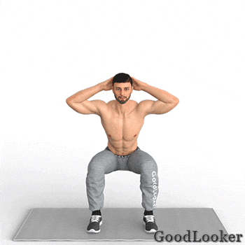
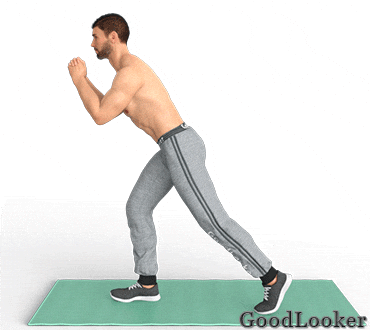
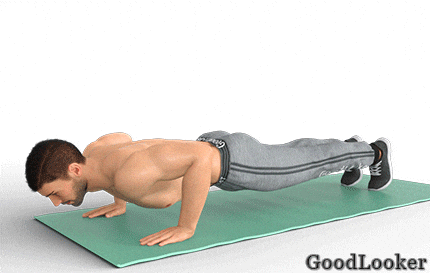
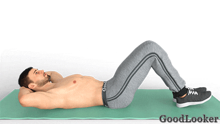
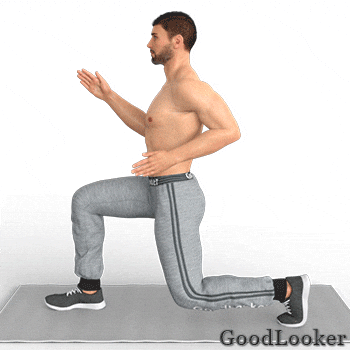
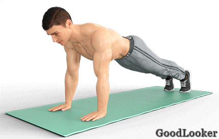
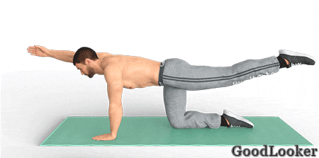
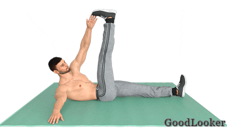
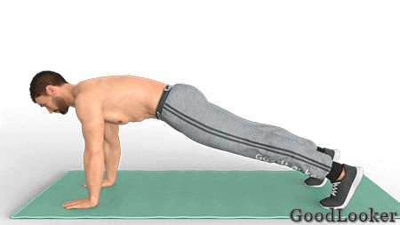

Четвертый день плана включает в себя усложненные упражнения без инвентаря, которые помогут вам качественно проработать мышцы ног, спины, груди, а также задействовать руки и плечи. Немалое внимание уделяется прокачке пресса и кора, что приблизит вас к кубикам на животе.
Тренируйтесь подходами или по круговой системе на ваш выбор. В случае подходов повторите каждое упражнение по 2-3 подхода и только затем переходите к следующему упражнению. В случае круговой системы выполните все упражнения последовательно по одному подходу и затем повторите все упражнения в 2 или 3 круга. Тренироваться можно по таймеру или считая повторения.
Поставьте ноги немного шире плеч, руки положите за голову. Выполните классическое приседание, отводя таз назад. На подъеме поднимите колено вверх и коснитесь его противоположным локтем. Снова выполните приседание, а на следующем подъеме смените сторону. Функциональное упражнение входит в программу тренировок для мужчин дома, так как обеспечивает кардио и силовую нагрузку, а также отлично прорабатывает мышцы ног, ягодиц и живота.
Сколько выполнять: 14-16 приседаний всего.

Встаньте прямо, сделайте небольшой шаг назад, руки сложите у груди. Наклоните корпус немного вперед, ноги слегка согните в коленях. Заднюю ногу согните в колене и приведите к груди, затем сразу же вернитесь обратно и снова повторите движение. Выполняйте упражнение целый подход на одну ногу, двигаясь в быстром темпе. Аэробное упражнение поможет вам быстрее избавиться от лишнего в области боков, а также прокачать сердечную мышцу, что благотворно скажется на здоровье в целом.
Сколько выполнять: 18-20 подъемов колена сначала на одну сторону, потом на другую.

Встаньте в упор лежа, ладони поставьте под плечами, ноги на ширине плеч. Согните руки в локтях, выполняя классическое отжимание. На подъеме левой рукой коснитесь правого плеча. Снова сделайте отжимание. На следующем подъеме коснитесь правой рукой левого плеча. Усложненное отжимание входит в программу тренировок для мужчин с собственным весом, так как глубоко прорабатывает мышцы груди и спины, плеч и рук, отлично прокачивает пресс.
Сколько выполнять: 10-12 отжиманий.

Лягте на спину, ноги согните в коленях, руки положите за голову. На выдохе оторвите голову и лопатки от пола, одновременно поднимая ноги и стараясь локтями коснуться коленей. На вдохе вернитесь в исходное положение. Напрягайте пресс во время фазы скручивания, чтобы максимально задействовать мышцы живота. Это классическое упражнение на пресс, которое отлично прокачивает прямую мышцу живота по всей длине.
Сколько выполнять: 12-15 повторений.

Сядьте на пол, ноги согните в коленях, обопритесь на руки позади себя. Поднимите таз вверх, руки должны быть выпрямлены. Теперь согните руки в локтях, опуская таз до уровня пола. Во время отжиманий направляйте локти назад, осуществляя движение за счет напряжения трицепсов. Обратные отжимания дают прицельную нагрузку на трицепсы, а также укрепляют мышцы плечевого пояса, трапеции и широчайшие спины.
Сколько выполнять: 10-12 отжиманий.
Опуститесь в статический выпад, колено задней ноги не касается пола. В коленях обеих ног прямой угол. Руки согните в локтях, ладони не сжимайте в кулаки. Выполняйте попеременные движения руками вперед-назад, словно при беге. Выполняйте упражнение в быстром ритме, чтобы как следует нагрузить мышцы плеч и предплечий. Упражнение выполняют в рамках тренировки на все тело для мужчин для статической работы мышцы ног, а также для укрепления плеч, бицепсов, трицепсов и мышц предплечий.
Сколько выполнять: 40 разведений рук в выпаде на правую ногу, потом столько же на другую ногу.

Встаньте в планку на прямых руках, не поднимайте таз и не провисайте в пояснице. Согните руки в локтях, опускаясь в планку на предплечьях. Теперь снова выпрямите руки, становясь в классическую планку. Меняйте положение рук, переходя из планки в планку, стараясь не менять положения тела. Не забудьте осуществлять подъемы сначала с правой руки, потом с левой попеременно. Непростое, но очень эффективное упражнение обеспечит мощную нагрузку на мышцы живота, а также укрепит плечи, руки и спину.
Сколько выполнять: 14-18 подъемов с каждой руки всего.

Встаньте на четвереньки, ладони поставьте под плечевыми суставами, колени – под тазобедренными. На выдохе поднимите правую руку и левую ногу, спустя пару секунд вернитесь в исходное положение. На следующем выдохе поднимите левую руку и правую ногу. Упражнение включено в тренировку дома для мужчин с собственным весом, так как укрепляет мышцы пресса и кора, задействует спину, руки и ноги, а также улучшает осанку и оздоравливает позвоночник.
Сколько выполнять: 18-20 подъемов на обе стороны всего.

Лягте на спину, выпрямите ноги, руки разведите в стороны. Поднимите левую руку и одновременно правую ногу. Оторвите от пола голову и лопатки, скручиваясь вправо и стараясь коснуться левой рукой правой стопы. При этом правая рука остается неподвижной. Вернитесь в исходное положение и затем смените сторону. Диагональная складка из программы тренировок для мужчин дома поможет вам прокачать косые мышцы пресса и укрепить кор.
Сколько выполнять: 14-18 касаний на обе стороны всего.

Встаньте в планку на прямых руках. На выдохе поднимите таз вверх и потянитесь левой рукой к правой стопе, как будто собираетесь принять позу собаки мордой вниз из йоги. Вернитесь в исходное положение и в следующий раз потянитесь правой рукой к левой стопе. Функциональное упражнение задействует мышцы живота и плечевого пояса, но в большей мере прокачивает силу и выносливость тела, улучшает общий рельеф тела.
Сколько выполнять: 18-20 касаний всего.
